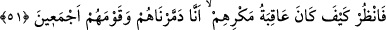

51. Bak işte, tuzaklarının âkıbeti nice oldu: Onları da; (kendilerine uyan)
kavimlerini de (nasıl) toptan helâk ettik!
“Bak” düşün, ey Muhammed “işte, tuzaklarının âkıbeti nice oldu:” yâni kurdukları
tuzağın sonucunda hangi hal ve durum meydana geldi: “Onları da;” gece baskınında
doğrudan kendileriyle beraber olmayan “(kendilerine uyan) kavimlerini de (nasıl)
toptan” hiçbir ferd kalmayacak şekilde “helâk ettik!”
“
” helâk ederek bir şeyin kökünü kazımaktır.
Rivâyet edildiğine göre Sâlih (a.s.)’ın Hicr’de bir vâdide namaz kıldığı bir mescidi
vardı. Bozguncular deveyi boğazlayınca Sâlih (a.s.) onlara: “Siz üç güne kadar helâk
edileceksiniz.” dedi. Onlar: “Salih, üç güne kadar bizden kurtulacağını iddiâ ediyor. Üç
günden önce biz ondan ve âilesinden kurtulalım.” dediler. Vâdiye doğru yola çıktılar ve:
“Namaz kılmaya gelince onu öldürürüz. Sonra da döner âilesini öldürürüz.” dediler.
Allah onların tarafına büyük bir kaya parçası gönderdi. Onlar da kaçıştılar. Kaya gelip
vâdinin ağzını onların üzerine kapadı ve orada helâk oldular. Hiç kimse onların nerede
olduklarını bilemedi. Geriye kalanlar da, şiddetli bir sesle bulundukları yerde helâk
oldular.
Fakir (Bursevî) der ki: Onların bu şekilde üstlerinin kaya ile örtülmesinin sebebi,
onların Salih (a.s.)’a baskın yapıp ansızın öldürmek istemeleridir. Allah da onları
ansızın helâk etti. Kavimlerinin şiddetli sesle helâk olması ise, onlar bozgun çıkarmakla
ilgili hususlarda onlara kulak verirlerdi. İşte onların herbirinin cezâsı kendi amelinin
cinsinden geldi.
52. İşte haksızlıkları yüzünden çökmüş evleri! Anlayan bir kavim için elbette
bunda bir ibret vardır.
“İşte haksızlıkları yüzünden” zikredilen zulümleri ve şirk gibi diğer günahlar
sebebiyle “çökmüş” âile ve oturan bulunmayan/boş kalmış veya yıkılmış ve enkaz
hâline gelmiş “evleri!”
Sehl (r.h.) der ki: “Evler” ile kalblere işâret edilmiştir. Bazı kalbler zikir ile mâmur,
bâzıları gafletle haraptır. Allah, kime zikrini ilhâm ederse, Allah için zulümden kurtulur.
“Anlayan” ilim ile muttasıf olan ve öğüt alan “bir kavim için elbette bunda”
zikredilen zulümleri sebebiyle hayret verici bir şekilde helâk edilmelerinde büyük “bir
ibret vardır.” Yâni ey Muhammed! Bil ki ben bu azâbı belirlenen vakit gelince senin